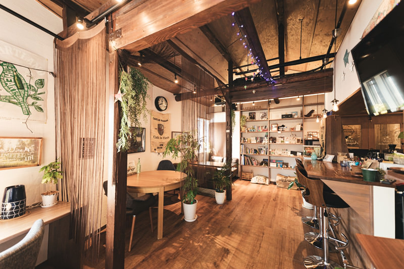

01
自家焙煎の厳選スペシャリティコーヒー
世界中から厳選した品質の高い生豆のみを仕入れ、その日の気温や湿度に合わせて自社焙煎を行っています。豆本来が持つフルーティーな香りと豊かなコクを最大限に引き出した、こだわりの一杯をお楽しみください。
世界中から厳選した品質の高い生豆のみを仕入れ、その日の気温や湿度に合わせて自社焙煎を行っています。豆本来が持つフルーティーな香りと豊かなコクを最大限に引き出した、こだわりの一杯をお楽しみください。

やわらかな自然光が差し込む店内には、ゆったりとした席配置と木製家具をご用意。お一人での静かな読書タイムも、大切な方との会話も、誰もが自分のペースで心からリラックスできる快適な時間を提供します。

豆の香りとコクを最大限に引き出すため、抽出には視覚的にも美しいサイフォンを採用。提供する器には、温かみのある和の絵付けが施されたカップなど、目でも楽しめるものを厳選しました。淹れる時間から飲み干す瞬間まで、特別なひとときをお届けします。